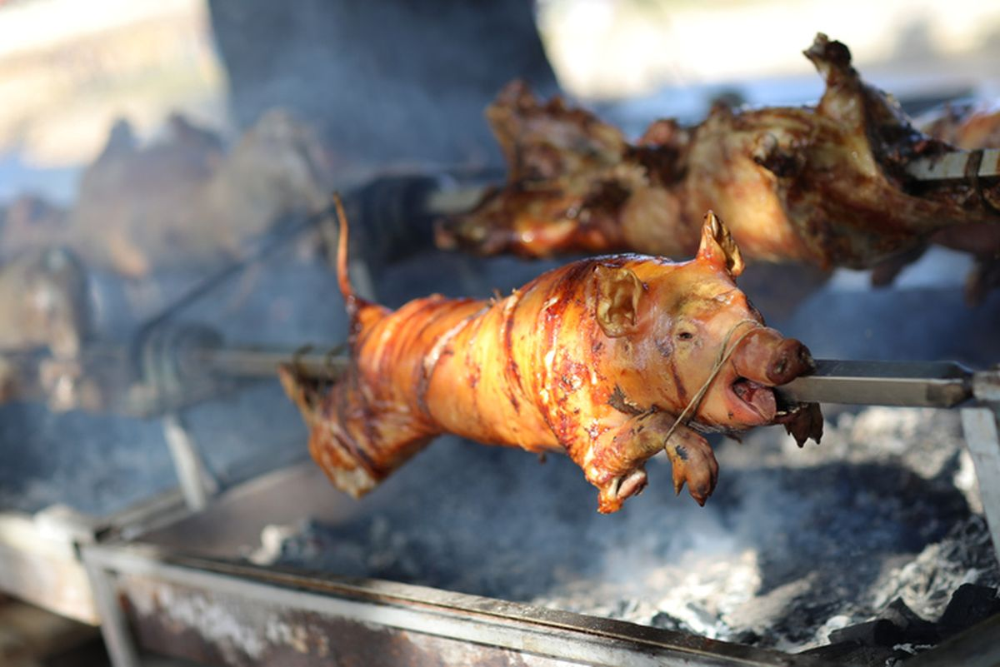
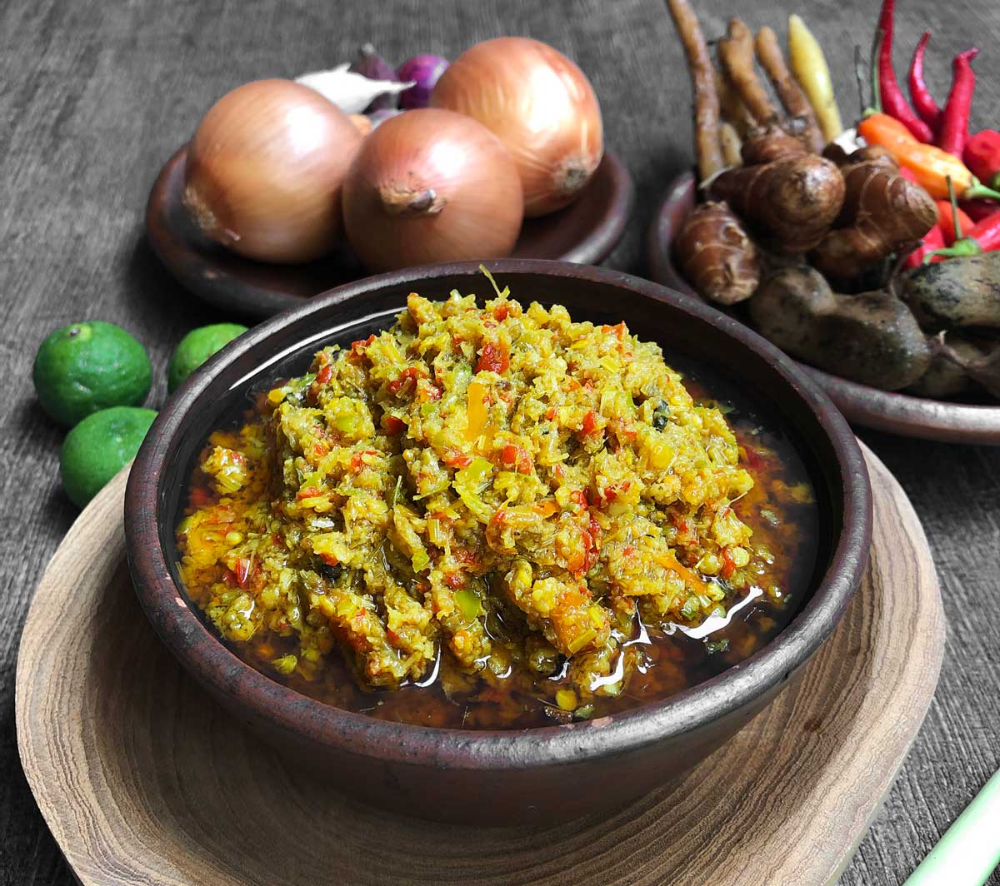
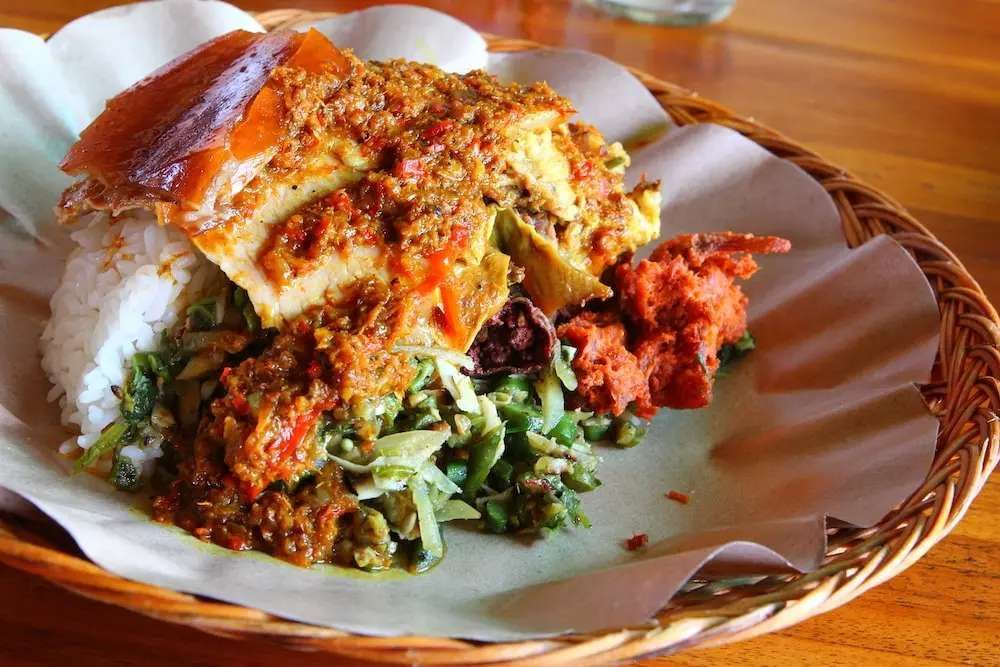
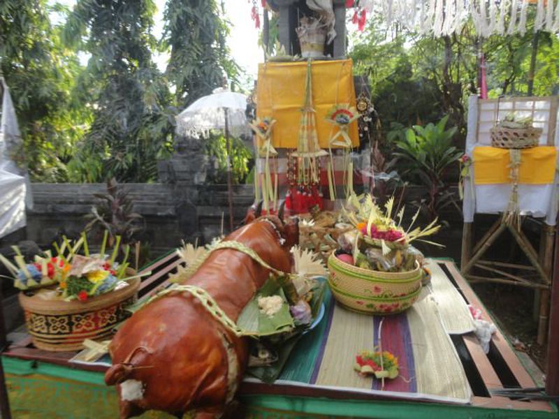
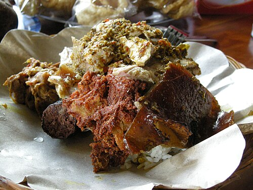

GALERI
Momen Babi Guling
Dari proses persiapan, pemanggangan, sampai penyajian dalam upacara adat.







GALERI
Dari proses persiapan, pemanggangan, sampai penyajian dalam upacara adat.




Babi guling adalah hidangan tradisional khas Bali berupa babi muda utuh yang bagian perutnya diisi base genep — bumbu wajib khas Bali yang terdiri dari kunyit, lengkuas, jahe, kencur, bawang merah, bawang putih, cabai, serai, hingga daun jeruk. Setelah diisi bumbu, babi dipanggang perlahan sambil terus diputar di atas bara api hingga kulitnya berwarna cokelat keemasan dan renyah (crispy skin), sementara dagingnya empuk dan meresap bumbu hingga ke bagian dalam.
Proses memanggang bisa memakan waktu 3–5 jam tergantung ukuran babi, dan biasanya dikerjakan bersama-sama oleh beberapa orang secara bergantian memutar tusukan bambu di atas bara api agar matang merata.

Bagi masyarakat Hindu Bali, babi guling bukan sekadar makanan, melainkan bagian dari yadnya — persembahan sebagai ungkapan rasa syukur kepada Ida Sang Hyang Widhi Wasa (Tuhan) dan leluhur.
Proses memasak babi guling secara tradisional dikerjakan bergotong royong oleh warga banjar (satuan komunitas adat), biasanya dipimpin oleh seorang juru masak atau tukang guling yang sudah berpengalaman. Kegiatan ini mempererat kebersamaan antarwarga sekaligus menjadi ajang regenerasi keterampilan memasak adat ke generasi muda.
RESEP TRADISIONAL BALI
Babi guling merupakan hidangan khas Bali yang menggunakan babi muda dengan bumbu rempah atau base genep. Bumbu dimasukkan ke bagian dalam babi, kemudian dipanggang sambil diputar hingga matang merata.

Babi Guling biasanya dinikmati bersama:
Lengkapi hidangan dengan berbagai pelengkap khas Bali untuk menikmati Babi Guling dengan lebih lengkap.
Hubungi KamiHUBUNGI KAMI
Punya pertanyaan atau ingin mengetahui lebih banyak tentang Babi Guling? Hubungi kami melalui kontak yang tersedia di bawah ini.
Bali, Indonesia
babiguling@example.com
+62 812-3456-7890
babiguling.ensiklopedia@gmail.com
Universitas Tarumanagara — Frontend Programming
[ tambahkan daftar sumber referensi yang dipakai di sini ]